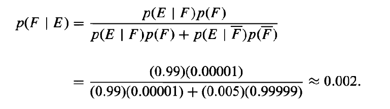
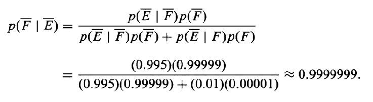

Exam 2 - 01 - Finite Probability
Analysis and computation of probabilities

Bayes theorem basically describes the probability of an event happening, based on some prior knowledge of related conditions to the event. Like how the opposite side on an inner angle in a triangle affects the hypothenuse and adjacent sides, Bayes's theorem relates one event's possibility of an event to occur to another event’s likelihood of happening. This theorem is an extension of Finite probability and its theories as it applies most concepts to this theorem. This theorem simply indirectly finds the probability of an event to another, assuming that those two such events are under one related experiment or sample space.
Used in (Once again similar to finite probability as it is merely an extension of it):
- Algorithms analysis
- Machine learning
- Cryptography
- Network Analysis
- Games and Entertainment

Example 2.3.1 - Flu Cases : Suppose that one person in 100,000 has a particular rare disease for which there is a fairly accurate diagnostic test. This test is correct 99% of the time when given to someone with the disease; it is correct 99.5% of the time when given to someone who does not have the disease. Given this information can we find:
(a) The probability that someone who tests positive for the disease has the disease?
Solution:
Let F be the event that a person has the disease, and let E be the event that this person tests positive for the disease. Then,
P (not E | not F) = 0.995;
Since P(E | F) = 0.99, then P (E | F) = 1-0.99 = 0.01
Also, P(F) = 1/100,000 or 0.00001, so P(not F) = 1 - 0.00001 = 0.99999
Now, we can solve for P (F | E) using Bayes’ theorem:

This means that only 0.2% of people who test positive for the disease actually have the disease.
(b) The probability that someone who tests negative for the disease does not have the disease?
Solution:
Let F be the event that a person has the disease, and let E be the event that this person tests positive for the disease. Then,
P (not E | not F) = 0.995;
Since P(E | F) = 0.99, then P (E | F) = 1-0.99 = 0.01
Also, P(F) = 1/100,000 or 0.00001, so P(not F) = 1 - 0.00001 = 0.99999
Now, we can solve for P (F | E) using Bayes’ theorem:

Consequently, 99.99% of the people who negative really do not have the disease.
Bayes Theorem is the most difficult and challenging part of Finite Probability and its’ theorems. It is the most important, and a fundamental part of Machine learning and Neural Networks, the two out of many topics of which that piqued my interest in taking a Computer Science course. Despite being already analyzed by computer scientists and ready to be applied in programming using simply a library for Naive Bayes, understanding how it works is crucial in understanding how machine learning works. The sudden surge of A.I. technologies that already mimic fictional characters as well as creating unique artworks that are almost far better than any artist interested me in learning this theorem. I have tried to understand this theorem many times but I am still at that part where I am not confident whether I have truly understood it. Even with difficulty, it still will not hinder my attempt of trying to understand its application in A.I. I hope there was more time for me to learn this topic as I have goals of trying to create a simple A.I. as a thesis.
Analysis and computation of probabilities

Extension of the analysis from Finite Probability.
King Igmedio Nicolai N. Behimino
(Shortcut: King N. Behimino)